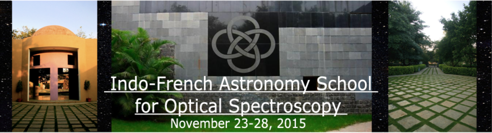

Home

Research Projects at 1st
Indo-French
Astronomy School
1-Integral field spectro-photometry
Mentor- Yannick Copin
Presentation
2-The MUSE/HUDF Tully-Fisher Relation
Mentor- David Lagattuta
Presentation
3-Spectral properties of optical hosts in radio galaxies
Mentor- Mamta Pommier and David Lagattuta
Presentation
4-The Gaia Benchmark stars
Mentor- Sergi Blanco and Philippe Prugniel
Presentation
5-Automated stellar spectral classification and parameter extraction
Mentor- Harinder Singh and Ranjan Gupta
Presentation
6-Lya Fluorescence around a radio loud QSO
Mentor- R. Srianand
Presentation
7- Using Long Slit Spectra from SALT-RSS to Study Stellar Populations in S0 Galaxies
Mentor- Kaustubh Waghmare
Presentation
Short Tutorial
I-GALFITS
Presentation-1
Presentation-2
II-Elemental abundance from high resolution spectra
Presentation
_________________________________________________________________________________________________
page is maintained by-
MAMTA POMMIER
(
mamta.pommier@univ-lyon1.fr
)
Centre de Recherche Astrophysique de Lyon- Observatoire de Lyon, 9 av Charles André,
69561 Saint Genis Laval Cedex, France
Tel: 0033 4 78 86 85 22
web:
https://cral.univ-lyon1.fr/labo/perso/mamta.pommier/mpwebpage-research.html
http://www.researchgate.net/profile/Mamta_Pommier